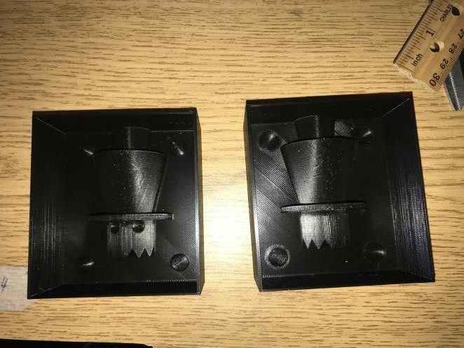
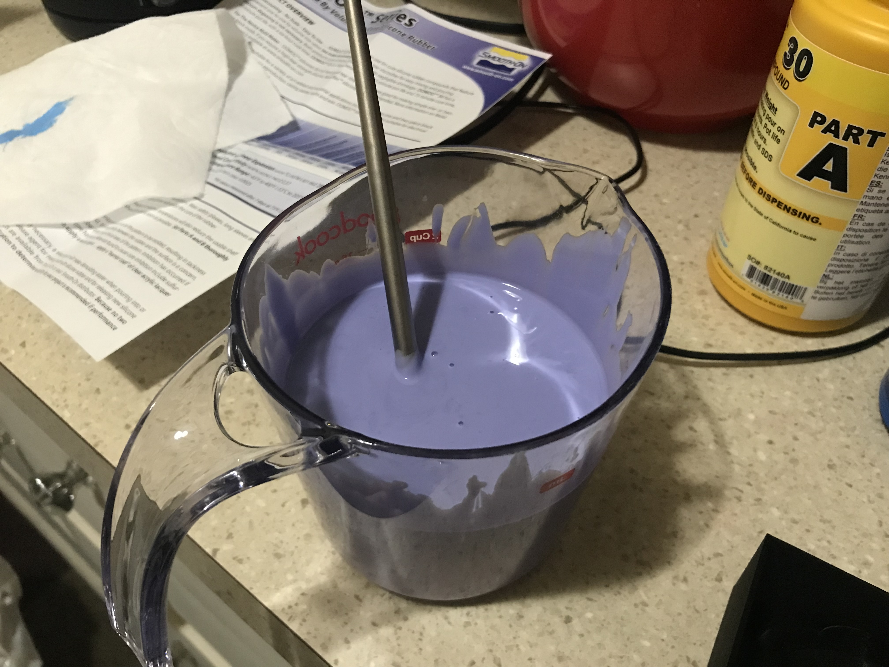
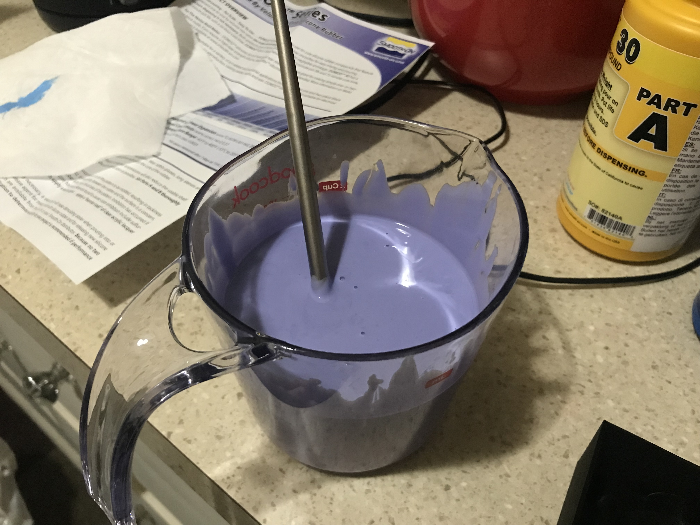

First thing I did was remodel my Ghost Wearing A Top Hat, because the old one had an inconsistent number of polygons. I used a ghost off thingiverse and modeled the hat myself. The final object is a "good" mesh. I made sure to keep the parts from each step so I could go back and change something if I needed to.

Next, I began creating the box that would be the mold for my mold. I cut the ghosts in half and used the Align tools to properly place each ghost half in the box, which I learned how to do from this youtube video. I used boolean union to combine objects.
Next I added the whole in the top to put the material into, and some small hemispheres to help with aligning. After I combined everything using Mesh Boolean Union and ensure that both pieces were in fact good meshes, I was ready to start printing.

I printed the mold molds by convirting the 3dm file into an stl, and then converting that into a geo file using Cura. On Cura I used all default settings and Super Quality. The molds took approximately 18 hours to print.

I was really happy with how the mold molds turned out. The only issue I saw were these little pointy specks on some of the surface, but I was able to scratch off most of it.
 
